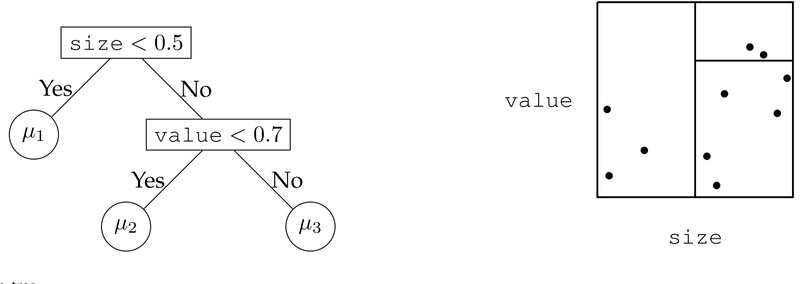
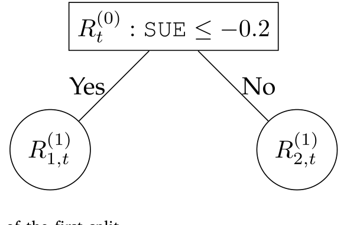
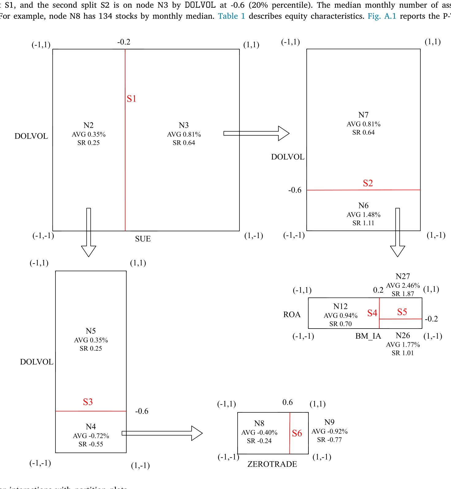
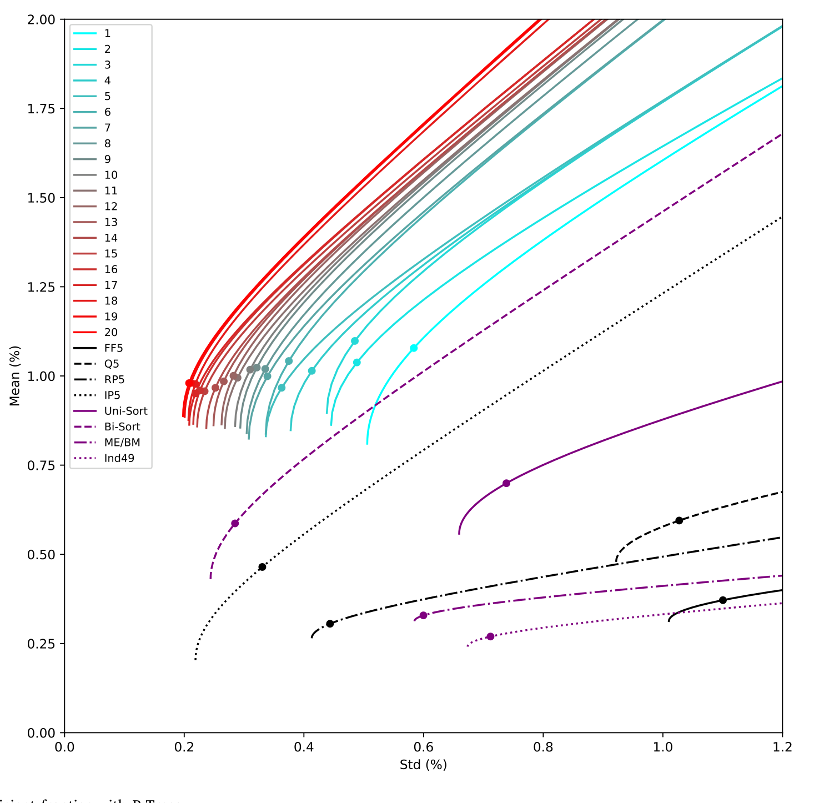
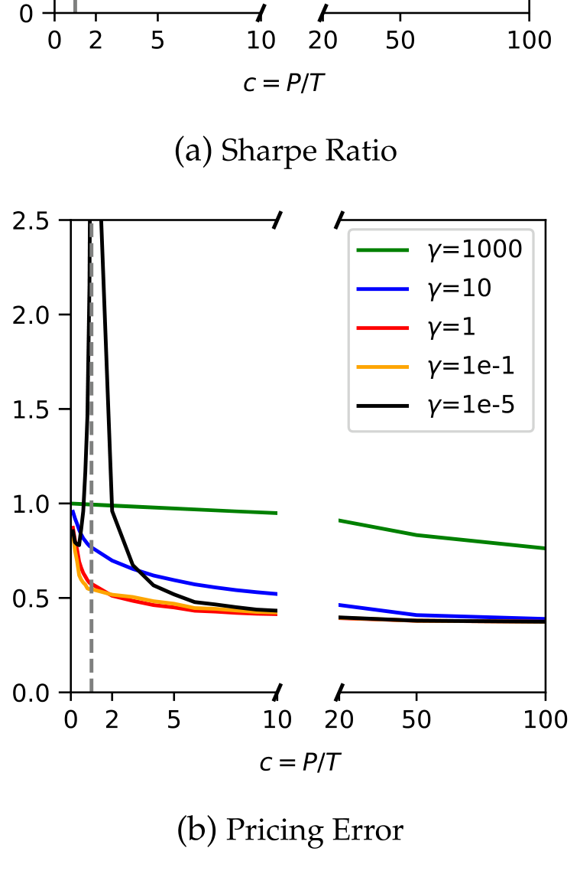
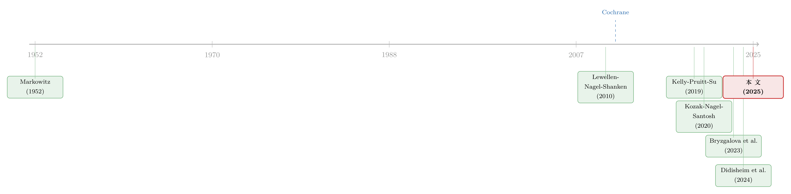

把「排序」种成一棵树：P-Tree 如何长出有效前沿
本文读的是 Cong, Feng, He & He (2025, Journal of Financial Economics)：他们把「给股票排序」这件做了半个世纪的老事，重写成一棵「带着资产定价目标去生长」的决策树——面板树 (Panel Tree, P-Tree)。每一次分裂都只问一个问题：哪一刀能把均值-方差有效 (mean–variance efficient, MVE) 前沿往外推得最远？最终用一组稀疏、可解释的特征，构造出年化夏普比率从 6.37 到 15.63 的检验资产，对 Fama–French 五因子的 GRS 统计量高达 141.27。
1 一个做了五十年、却始终没做完的动作
如果要在整个实证资产定价里挑一个最朴素、又最常用的动作，那一定是「排序」（sorting）。把股票按市值分成大、中、小，再按账面市值比分成高、中、低，交叉一下，就得到了我们再熟悉不过的 ME-BM 25 个组合。几乎所有因子模型的估计与检验，都建立在这样一小撮「检验资产」（test assets）之上。
这个动作背后有一个朴素的信念：我们希望这二十五个组合，或者背后那几个因子，能够「张成」（span）和成千上万只个股一样的有效前沿。换句话说，我们希望用一把粗糙的尺子，量出整个市场最锋利的那条边界。
可问题是，这把尺子真的够用吗？
早在十几年前，Cochrane（2011）在他著名的美国金融学会主席演讲里就把话挑明了：预期收益、方差、协方差，都是资产特征（如规模、价值）的稳定函数；真正的难题，是如何系统性地利用高维的特征信息（关于这场「贴现率」之辩，可参见《贴现率：资产定价的中心议题》）。而我们手上的排序，几乎从来没有越过「双变量」这道坎——按两个特征排序已经是极限，三个、五个、几十个特征同时排序，组合数会爆炸，每个格子里的股票会少到无法分散。于是非线性、不对称的交互作用（asymmetric interactions），就这样被我们系统性地漏掉了。
更尴尬的是，Lewellen, Nagel & Shanken（2010）早就警告过：这些临时拼凑（ad hoc）的检验资产，本身就让模型的估计和检验变得不可靠。我们一边抱怨因子动物园太吵，一边却还在用一把钝刀去裁剪它。
这篇论文的野心，正是要把「排序」这个动作本身重新发明一遍——不是换一组更好的检验资产，而是换一套生成检验资产的方法。
2 现成的机器学习树，为什么不行？
既然是高维、非线性、还带交互，很多人脑子里第一个蹦出来的工具就是机器学习。而在所有 ML 模型里，最适合「排序」直觉的，莫过于决策树——它干的事，本来就是「按某个变量的取值，把样本切成两半」，这和按特征排序几乎是同义词。
最经典的版本是 分类与回归树 (Classification and Regression Trees, CART, Breiman et al., 1984)。它把预测变量空间切成互不重叠的叶节点，每个叶节点配一个常数参数。形式化地说，设有 \(K\) 个预测变量，第 \(i\) 个观测记为 \(\mathbf{z}_i=(z_{i,1},\dots,z_{i,K})\)，经过 \(J\) 次二元分裂后，整棵树就是一个高维阶梯函数：
$$ g(\mathbf{z}_i \mid \Theta_J) \;=\; \sum_{n=1}^{J+1} \mu_n \, \mathbb{I}\{\mathbf{z}_i \in \mathcal{R}_n\} $$
这里 \(\mathcal{R}_n\) 是第 \(n\) 个叶节点对应的区域，\(\mathbb{I}\{\cdot\}\) 是示性函数，\(\mu_n\) 是该叶节点里训练样本的平均——落在同一片叶子里的股票，共享同一个收益预测。下图就是这样一棵两次分裂、三片叶子的树：先按价值切一刀，再把高价值那支按规模切一刀，分成「小盘」「大盘成长」「大盘价值」三类。

Figure 1: Example of a decision tree
直接把 CART（或者它的提升树、随机森林这些集成版本）丢到「特征—收益」数据上，确实能跑出正的预测力（比如 Gu, Kelly & Xiu, 2020）。但这条路上有两道坎，恰恰是资产定价最在意的：
第一，它假设观测是 i.i.d. 的。 CART 把面板里每一个「股票×月份」当成一颗独立的弹珠，完全无视了「同一只股票在不同月份」「同一月份不同股票」这样的面板结构。
第二，更要命的，它是「近视」（myopic）的。 CART 递归生长，每一次分裂只盯着当前这个节点里的平方误差，optimize locally，根本不去看它的兄弟节点。这样做是为了计算省事，可代价是：树越长越深，每个节点里的样本越来越少，特异性噪声（idiosyncratic noise）就越容易被当成信号——过拟合（overfitting）几乎是注定的。
接着，一个自然的问题是：决策树的「骨架」明明和排序如此契合，能不能把它从一个「预测工具」改造成一个「生成检验资产、还原定价核」的工具？
3 P-Tree：让每一刀都为有效前沿服务
这正是 P-Tree 的核心一招，也是全文反复打磨的那一个想法：把分裂准则，从「局部地减小预测误差」换成「全局地推高有效前沿」。
具体怎么做？P-Tree 同样从根节点出发，自上而下地切分成千上万只个股。但它有两个关键改动。
其一，时间不变的树结构（time-invariant tree structure）。同一棵树的分裂规则，对所有 \(T\) 期都成立。这样一来，每个叶节点就对应一组固定的「特征管理的叶节点基组合」（characteristics-managed leaf basis portfolio）——本质上就是落在该叶子里的股票的（市值加权）组合。第 \(j\) 次分裂后，树有 \(j+1\) 片叶子，也就有 \(j+1\) 个叶节点基组合，把成千上万只个股的维度，一举压缩到 \(j+1\) 个组合。记第 \(j\) 次分裂后所有叶节点基组合的超额收益向量为
$$ \mathbf{R}_t^{(j)} \;=\; \big[\,R_{1,t}^{(j)},\,\dots,\,R_{n,t}^{(j)},\,\dots,\,R_{j+1,t}^{(j)}\,\big] $$
而 \(f_t^{(j)}\) 是由 \(\mathbf{R}_t^{(j)}\) 张成的因子，也就是这 \(j+1\) 个组合的 MVE 组合（切点组合，tangency portfolio）。根节点 \(\mathbf{R}_t^{(0)}=[\,R_t^{(0)}\,]\) 恰好就是市值加权的市场组合——一切从「市场」这个最粗的分类开始。
其二，也是真正关键的一步：全局分裂准则（global split criterion）。在每一步，P-Tree 不是去优化某个叶子内部的拟合，而是把所有候选的「特征 × 切点」都试一遍，问的是同一个问题——哪一刀，能让全部 \(j+1\) 个叶节点基组合所张成的切点组合，夏普比率（Sharpe ratio）最大？写成最核心的那个判据：
这个连乘 \(\boldsymbol{\mu}^{\top}\boldsymbol{\Sigma}^{-1}\boldsymbol{\mu}\)，正是均值-方差框架下切点组合的最大平方夏普比率。它衡量的是：用现有这组叶节点基组合，最多能把有效前沿推到多高。P-Tree 的每一次生长，都在所有叶节点的所有候选切法里，挑出那个让前沿外推得最远的——the largest investment improvement。
为了让搜索可行，论文做了两点工程化处理：每一期把特征在横截面上统一标准化到 $[-1,1]\(；候选切点只取**五分位**（quintile）档位 \)c_m\in{-0.6,-0.2,0.2,0.6}$。四千只左右的股票、几十个高度相关的特征，用五分位切既压缩了搜索空间，又避免了切得太碎、某些组合里没几只股票而失去分散性。下面这张图，就把第一刀的样子画了出来：在一长串候选里（比如「标准化超预期盈余 SUE ≤ −0.2」「40% 分位」……）逐一计算判据值，选出最优的那一刀。

Figure 2: Illustration of the first split
注意这里的对比：CART 是「先长一棵大树，再剪枝」，每刀只看局部；P-Tree 是「从根开始长，每刀都用全样本算一遍全局夏普」。前者是近视的贪心，后者是有目标的贪心——同样是贪心算法保证了计算可行，但目标函数从「预测误差」彻底换成了「有效前沿」。
正因为分裂规则跨期不变、又显式写在树图上，P-Tree 还顺手保住了一样东西——可解释性。它能告诉你，到底是哪几个特征、以怎样的非对称方式交互，共同生成了这些检验资产。这一点，PCA 和深度学习给不了你（在「把黑箱拆成玻璃箱」这件事上，公司债市场也有类似的努力，可参见《把机器学习的黑箱拆成玻璃箱：公司债收益率能被「看懂」地预测吗？》）。下图用分区图（partition plot）展示了这种非线性交互长什么样子。

Figure 5: Visualizing nonlinear interactions with partition plots
4 主要结果：前沿被推到了哪里？
讲清了机制，真正让人坐直身子的是数字。
论文用 1981 至 2020 年的美国月度股票收益、61 个公司特征来生长 P-Tree。结果是：作为可交易因子的 P-Tree 切点组合，年化夏普比率从单棵 P-Tree（10 个组合）的 6.37，一路升到 20 棵提升 P-Tree（200 个组合）的 15.63。
这些数字比传统的单变量、双变量排序组合，或者常用因子模型所能达到的，高出一大截。这本身就是一个有力的证据：当前实证文献用的那些检验资产，和有效前沿的真正上限之间，存在着一道被长期低估的鸿沟。下图把这件事画得最直白——P-Tree 生成的检验资产，把有效前沿整体往左上方推了出去。

Figure 7: Characterizing the efficient frontier with P-Trees
反过来，这组「难缠」的 P-Tree 检验资产，也给所有竞争性因子模型出了一道难题。针对第一棵 P-Tree、用 Fama–French 五因子模型（Fama and French, 2015）去解释时，GRS 检验（Gibbons–Ross–Shanken test, Gibbons, Ross & Shanken, 1989）统计量高达 141.27，绝大多数月度 alpha 大于 1%。无论是其他可观测因子模型，还是 Kelly, Pruitt & Su（2019）、Lettau & Pelger（2020）这类基于 ML 的潜在因子模型，都难以把它们解释掉。
必须诚实地提醒一句：上面这些惊人的夏普比率是样本内（in-sample）的。论文自己在脚注里点明，样本内外存在明显落差（「limits to learning」）。到了真正的样本外（OOS）检验里——无论是「用过去预测未来」还是「用未来预测过去」——P-Tree 因子的年化夏普比率回落到 3 以上，alpha 仍显著为正。3 也很高，但和 15.63 已不是一个量级。读这篇文章时，请把这两组数字分开看。
5 从一棵树，到一片森林
然后，一个自然的延伸是：一棵树会不会太「单薄」？P-Tree 框架在这里展示了它的弹性，把机器学习里的两大集成思想都接了进来。
一路是提升（boosting）。提升 P-Tree（Boosted P-Tree）在前一棵树的基础上再长新树，要求每一棵新树都必须提供增量的贡献——多出来的因子和检验资产，得真的把尚未被张成的那部分前沿补上。这就给「多因子模型」提供了一个统一的生成框架，也是 6.37 一路涨到 15.63 的来源。
另一路是装袋（bagging）。随机 P-Forest（random P-Forest）在自助抽样（bootstrap）的样本上长出许多棵彼此不相关的 P-Tree，用来评估特征重要性、刻画变量选择风险。一个让人安心的发现是：被 P-Tree 反复选中的，始终是同一小撮特征——标准化超预期盈余 SUE、美元成交量 DOLVOL、行业调整账面市值比 BM_IA。它们很可能是 SDF 里真正基本面风险的代理，而这些，恰恰是临时拼凑的线性因子模型容易漏掉的。
但真正有意思的反转，藏在「森林到底要多大」这个问题里。当随机 P-Forest 越长越大、参数个数 \(P\) 超过观测数 \(T\)（论文用 \(c=P/T\) 度量过度参数化的程度）时——按经典的偏差-方差权衡，这本该是过拟合的灾区——它的样本外表现却不降反升。这正呼应了近年统计学里的「良性过拟合」（benign overfitting, Belkin et al., 2019; Hastie et al., 2022）与金融语境下的「复杂度的德性」（virtue of complexity, Kelly, Malamud & Zhou, 2024; Didisheim et al., 2024）。

Figure 8: OOS Performance of Random P-Forest SDF. performance and define𝑐=𝑃∕𝑇 as the degree of parameterization or
这里 P-Tree 给出的，是一个温和却深刻的论断：有目标的搜索 + 适当的正则，可以逼近暴力大模型的样本外表现，却保住了稀疏与可解释。 用更少的「积木」，搭出几乎一样高的前沿——这正是它区别于深度学习黑箱的地方（在「收缩横截面」这条线上，Kozak, Nagel & Santosh 早就主张对庞杂的因子做收缩，可参见《压缩横截面：因子动物园的尽头，不是更少的因子，而是更聪明的收缩》）。
6 文献脉络
把这篇论文放回它生长的那片土壤里，线索其实很清晰。
源头是 Markowitz（1952）的均值-方差框架——切点组合、有效前沿，一切定价讨论的地基。接着是漫长的「排序时代」：Fama–French 式的多变量排序统治了实证资产定价几十年，却被 Lewellen, Nagel & Shanken（2010）批评为临时拼凑、检验乏力，又被 Cochrane（2011）点出高维排序的根本困境。
然后，两股力量开始改造这套老方法。一股是「收缩 SDF」：Kozak, Nagel & Santosh（2020）等人主张在大量预设的检验资产上估计正则化的 SDF。另一股是「潜在因子 + 机器学习」：Kelly, Pruitt & Su（2019）的 IPCA、Lettau & Pelger（2020）的 RPPCA，以及 Gu, Kelly & Xiu（2020）把 ML 直接用于预测。与此同时，Bryzgalova et al.（2023）开始用决策树的语言重述排序，但他们是「剪枝」——从预设的叶组合往回收。

而 P-Tree 站的位置，是把这两股力量在「生长」这一端合流：它不预设、不剪枝，而是从根开始，以有效前沿为目标，迭代地生成检验资产与潜在因子。再往前一步，随机 P-Forest 又接上了「复杂度的德性」（Didisheim et al., 2024; Kelly, Malamud & Zhou, 2024）这条最新的支线，以及 Jensen et al.（2024）关于「可实现的有效前沿」的讨论。一句话——它把排序、收缩、潜在因子、过度参数化，缝进了同一棵树。
7 评论与延伸（Q&A + 研究方向）
(a) 几个可能的疑问
Q：P-Tree 和 Bryzgalova et al.（2023）的 AP-Trees 到底差在哪？
差在生长的方向。AP-Trees 从一批预设的潜在叶组合出发，靠收缩/剪枝把没用的资产压掉，且没有指定一个生长用的分裂准则。P-Tree 反过来，从根节点自上而下地长，每一刀都用一个全局的夏普比率判据来选——它是「目标导向地长树」，对方是「正则化地砍树」。
Q：6.37 到 15.63 这种夏普比率，是不是好得不真实？
在样本内，确实高得反直觉，但这本就是「最大平方夏普 μ'Σ⁻¹μ」在高维、可自由优化权重时的常态——前沿被推得越高，数字越夸张。真正该看的是样本外：OOS 夏普回落到 3 以上、alpha 仍显著。论文也坦白了这道「样本内外落差」。所以把它当成「前沿上限有多高」的度量，而不是「能落袋多少」的承诺，更稳妥。
Q：「全局分裂准则」的全局，到底全局在哪？
在于构造切点组合 \(\mathbf{F}\) 时，用的是全部 \(j+1\) 个叶节点基组合，而不是 CART 那样只盯着被分裂的那个节点。换言之，评价一刀好不好，看的是它对整条前沿的边际贡献，而不是局部的拟合优度。这也是它抗过拟合的来源——每一步都动用了整个横截面的信息。
Q：为什么过度参数化（P > T）反而样本外更好？
这正是「复杂度的德性」。当模型容量足够大、又施加了恰当的正则（这里是随机森林的装袋 + 收缩），插值解会落在一个泛化性意外地好的区域。P-Tree 的贡献是证明：树这种稀疏、可解释的结构，也能享受到这份红利，而不必沦为深度网络式的黑箱。
Q：把特征切到五分位，会不会丢掉信息？
会丢一点，但这是刻意的取舍。论文指出，四千只股票、特征又高度相关，若切到十分位甚至更密，每片叶子里股票太少，组合就不再分散、反而过拟合。五分位是在「搜索空间」「分散性」「过拟合」之间的折中。
Q：选出来的 SUE、DOLVOL、BM_IA，是真风险还是数据挖掘？
论文用随机 P-Forest 在大量自助样本上重复选择，发现这一小撮特征被稳定选中，因此更像是 SDF 里基本面风险的代理，而非偶然。但这是「稳健性证据」，不是因果证据——它说明信号稳定，不等于说清了它对应哪种经济风险。
(b) 几个可能的研究问题与提案
1. 把 P-Tree 搬到公司债横截面。 【经济故事】公司债的横截面同样苦于「该用什么检验资产」：信用利差、久期、流动性、评级交织出强烈的非线性与交互，而传统双变量排序更显捉襟见肘。用 P-Tree 以夏普比率为目标生长，或许能生成一组比「评级×久期」格子更锋利的债券检验资产。 【可行性】中。数据上 TRACE + Mergent FISD 足够；难点在于债券面板高度不平衡、收益噪声大、流动性使协方差矩阵更难估，正则化的设定要格外小心。
2. 用外资持有人结构作为分裂特征。 【经济故事】如果把「外资持股比例」「持有人集中度」这类所有权特征也放进特征集，P-Tree 会不会把它选进 SDF？这能直接检验「谁持有，是否被定价」。 【可行性】中。需要 13F / 国际持仓数据与收益面板对齐；识别上仍是关联而非因果，但作为「特征重要性」证据是 doable 的。
3. 把流动性目标写进分裂准则。 【经济故事】P-Tree 的目标函数是可替换的——若把「最大夏普」换成「在给定换手/流动性约束下的最大夏普」，就能生成「可实现」的检验资产，直接对话 Jensen et al.（2024）的可实现有效前沿。 【可行性】高。只需改写目标函数并加入交易成本/换手惩罚项，框架本身完全支持；计算量可控。
4. P-Tree 选出的稀疏特征集，是否随宏观状态切换？ 【经济故事】论文已讨论 P-Tree 对宏观状态的稳健性。更进一步：在衰退 vs 扩张、高 vs 低波动状态下分别生长 P-Tree，被选中的特征是否系统性地换人？这能把「特征—风险」的状态依赖性可视化。 【可行性】高。按 NBER 周期或波动状态分样本重跑即可，纯实证、无需新数据。
5. 用 P-Tree 评估单个特征的「边际定价价值」。
【经济故事】论文的 Figure 10 已展示「用 P-Tree 评估一个特征」。可以系统化为一个「特征体检」流程：把某个新提出的异象特征丢进 P-Tree，看它在全局判据下能否提供增量夏普——这等于给「因子动物园」装了一道入园闸机。
【可行性】高。框架现成、R 包 PTree 已开源，是最容易落地的一条。
8 我的判断
这篇论文真正的贡献，不在于又刷出一个高夏普——而在于它把「排序」这个最古老的动作，重新表述成一个以有效前沿为目标的、可计算的搜索问题，并且在「机器学习的非线性威力」与「经济学的可解释性」之间，找到了一个罕见的平衡点。它给整个领域提了个醒：我们用了几十年的 25 个组合，门槛实在太低；未来的模型检验，理应面对这种系统性多特征排序生成的、更难缠的检验资产。
对识别（更准确说，对稳健性）我有两点保留。其一，样本内外那道从 15.63 到 3 的落差，提醒我们这套方法的「前沿」有相当一部分是优化器在高维里挤出来的，论文虽诚实披露，但它在多大程度上可被实现，仍是开放问题。其二，五分位、特征标准化、正则强度这些「工程旋钮」对结果的影响有多大，值得更系统的敏感性分析——一个对调参高度敏感的高夏普，和一个稳健的中夏普，含义截然不同。
我接下来最想看到的，是两件事：一是把目标函数换成带交易成本/换手约束的版本，看「可实现的 P-Tree 前沿」会缩水多少；二是把这套框架移植到公司债与信用市场，那里检验资产的贫乏程度，恰恰是 P-Tree 最该大展身手的地方。
参考文献
Belkin, M., Hsu, D., Ma, S., Mandal, S. (2019). Reconciling modern machine-learning practice and the classical bias–variance trade-off. Proceedings of the National Academy of Sciences 116(32), 15849–15854.
Breiman, L., Friedman, J.H., Olshen, R.A., Stone, C.J. (1984). Classification and Regression Trees. Routledge.
Cochrane, J.H. (2011). Presidential address: Discount rates. Journal of Finance 66(4), 1047–1108.
Fama, E.F., French, K.R. (2015). A five-factor asset pricing model. Journal of Financial Economics 116(1), 1–22.
Gibbons, M.R., Ross, S.A., Shanken, J. (1989). A test of the efficiency of a given portfolio. Econometrica 57(5), 1121–1152.
Gu, S., Kelly, B., Xiu, D. (2020). Empirical asset pricing via machine learning. Review of Financial Studies 33(5), 2223–2273.
Hastie, T., Montanari, A., Rosset, S., Tibshirani, R.J. (2022). Surprises in high-dimensional ridgeless least squares interpolation. Annals of Statistics 50(2), 949.
Jensen, T.I., Kelly, B.T., Malamud, S., Pedersen, L.H. (2024). Machine learning and the implementable efficient frontier. Review of Financial Studies, Forthcoming.
Kelly, B., Malamud, S., Zhou, K. (2024). The virtue of complexity in return prediction. Journal of Finance 79(1), 459–503.
Kelly, B., Pruitt, S., Su, Y. (2019). Characteristics are covariances: A unified model of risk and return. Journal of Financial Economics 134(3), 501–524.
Kozak, S., Nagel, S., Santosh, S. (2020). Shrinking the cross-section. Journal of Financial Economics 135(2), 271–292.
Lettau, M., Pelger, M. (2020). Factors that fit the time series and cross-section of stock returns. Review of Financial Studies 33(5), 2274–2325.
Lewellen, J., Nagel, S., Shanken, J. (2010). A skeptical appraisal of asset pricing tests. Journal of Financial Economics 96(2), 175–194.
Markowitz, H. (1952). Portfolio selection. Journal of Finance 7(1), 77–99.